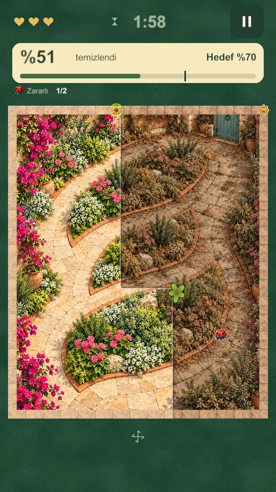
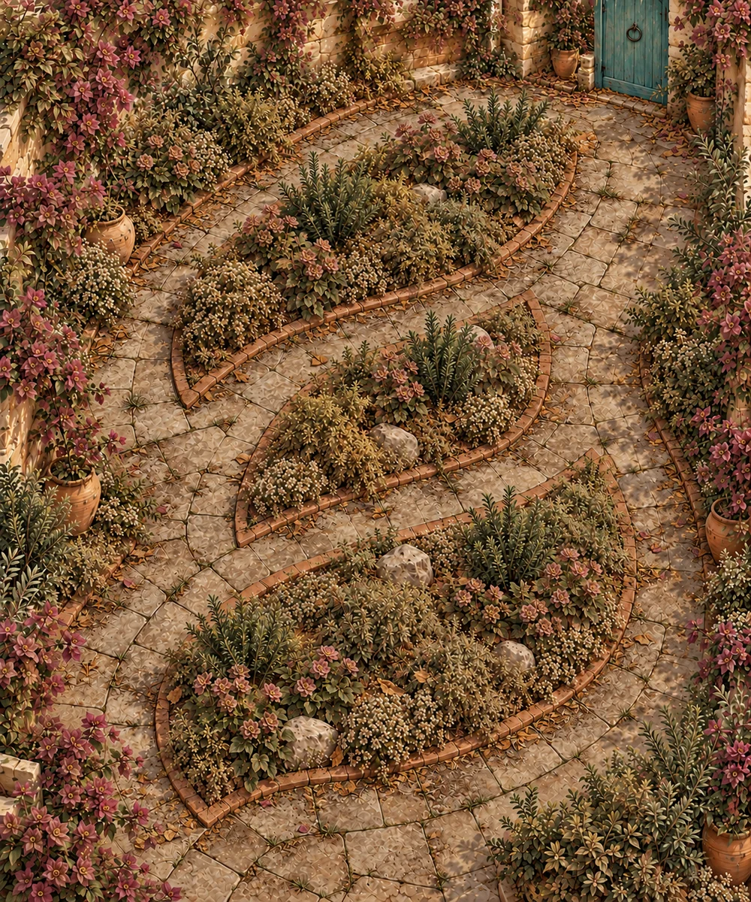
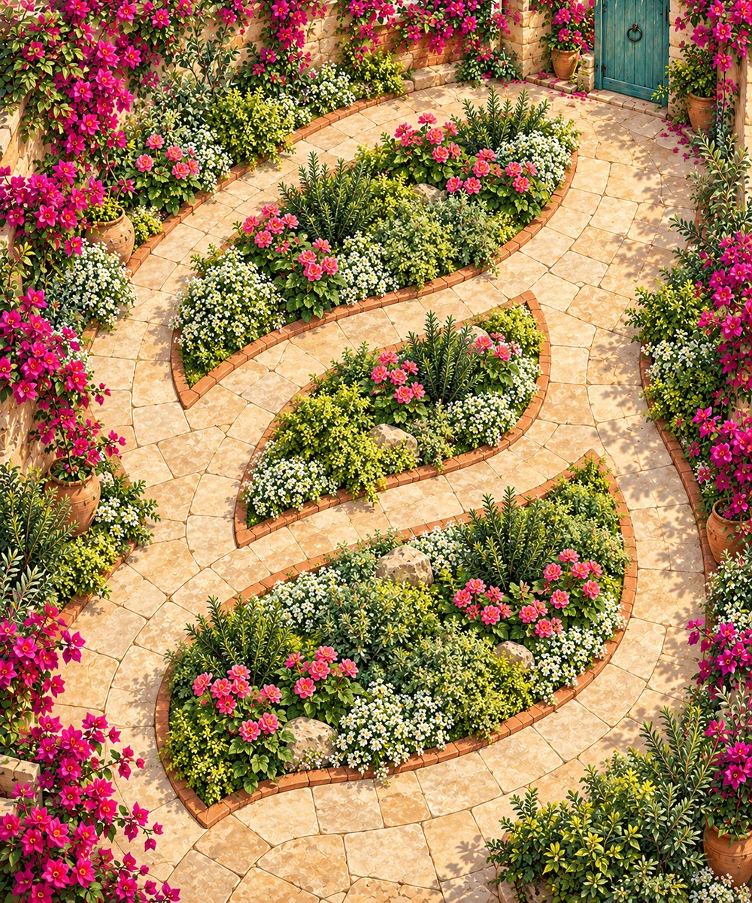
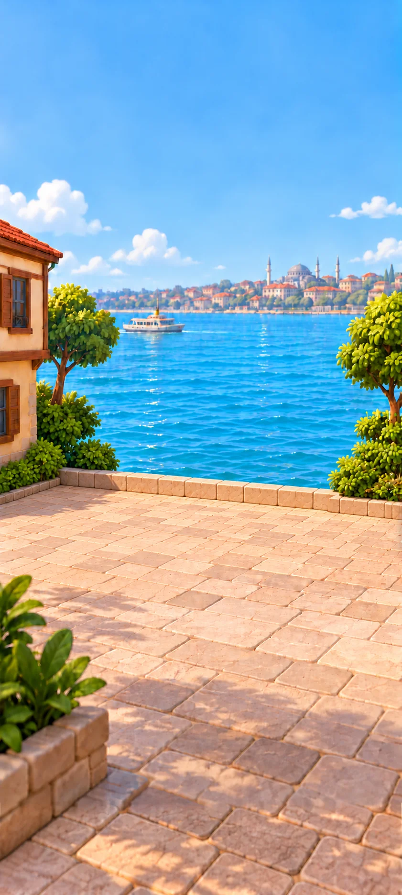

✳MERHABA, BİZ ZELPARO.
Küçük molalar.
Yeni dünyalar.
Günün arasına biraz keşif, biraz heyecan ve “bir bölüm daha” dedirten oyunlar katıyoruz.
İlk oyunumuzu keşfet01 / İLK MACERA
MOBİL · ALAN KAPATMA · KEŞİFGarden RushWORLD TOUR
Bir bahçeyle başla.
Dünyaya açıl.
Çizgini çek, alanı kapat, bahçeye yeniden hayat ver. Her tamamlanan iş, küçük dükkânını büyütmek ve yeni bir şehre yola çıkmak için bir adım.
Bahçedeki dönüşümü görYayın tarihi henüz açıklanmadı.

05FARKLI ŞEHİR
150BAHÇE, YENİ BİR BAŞLANGIÇ
01SENİN BÜYÜYEN HİKÂYEN


Kaydır, dönüşümü keşfet.Oyun içi bahçe görselleri
KÜÇÜK HAMLELER, BÜYÜK DEĞİŞİM
Güzellik, bıraktığın
izin ardında.
Biraz cesaret, doğru bir dönüş ve tam zamanında kapanan bir çizgi. Her bahçede çözülmeyi bekleyen yeni bir yol var.
- 01
Yolunu çiz
Güvenli kenardan ayrıl. Bahçede kendi rotanı oluştur.
- 02
Bahçeyi geri kazan
Yaratıklara yakalanmadan çizgiyi kapat, alanı temizle.
- 03
Yeni bir sayfa aç
İşlerden kazandıklarınla dükkânını geliştir, yeni şehirlere ilerle.
AYNI MERAK. BAMBAŞKA SOKAKLAR.
Sıradaki durak?
İstanbul'dan New York'a.
Her şehirde yeni bahçeler, yeni bir dükkân.

İstanbul
Her büyük yolculuğun küçük bir başlangıcı var. Seninki, Boğaz'ın kıyısındaki bu dükkânda.
GARDEN RUSH: WORLD TOUR'DANOYUNUN ARKASINDA
İyi bir oyun,
küçük bir merakla
başlar.
Zelparo'da, dönüp yeniden ziyaret etmek isteyeceğin küçük dünyalar kuruyoruz.
Kolayca içine girebildiğin, oynadıkça yeni şeyler keşfettiğin ve ilerlemeni görebildiğin oyunlar. İlk adımımız Garden Rush: World Tour. Yolculuğumuz daha yeni başlıyor.
ZELPAROBİRAZ DA MERAK ETTİKLERİN
Aklında bir soru mu var?
Garden Rush'ı ne zaman oynayabilirim?
Oyun geliştirme aşamasında. Yayın tarihi ve mağaza bağlantıları hazır olduğunda bu sayfada paylaşılacak.
Hangi cihazlar için geliştiriliyor?
İlk hedefimiz Android telefonlar. Diğer platformlarla ilgili duyuruları burada paylaşacağız.
Hangi dillerde oynayabilirim?
Garden Rush, Türkçe ve İngilizce olarak geliştiriliyor.
Oyuncu desteğine nasıl ulaşabilirim?
Destek adresimiz: support@zelparogames.com. E-posta kanalımızı oyun yayınlanmadan önce açıyoruz.